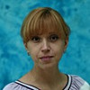

Дошкольное отделение школы № 1133
В 2015 году 27% первоклассников Школы № 1133 пришли из дошкольного отделения.
- улица Крылатские Холмы, 11
Воспитатели
Воспитатели, которых чаще всего благодарят родители (отзывы и профили сотрудников взяты с официального сайта школы):|
Воспитатель
Проскурякова Надежда Аркадьевна
4 благодарности |
Воспитатель
Деменева Татьяна Юрьевна
3 благодарности |
Воспитатель
Щенева Елена Викторовна
3 благодарности |
Воспитатель
Дроздова Ольга Михайловна
3 благодарности |
|
Воспитатель
Вязникова Елена Петровна
3 благодарности |

Воспитатель
Хрычкова Людмила Николаевна
3 благодарности |
Физ. рук.
Давыдова Надежда Сергеевна
2 благодарности |
Воспитатель
Белова Наталья Николаевна
2 благодарности |
|
Физ. рук.
Беляков Павел Викторович
1 благодарность |
Воспитатель
Бекалдиева Варвара Юрьевна
1 благодарность |
Муз. рук.
Микрюкова Ольга Леонидовна
1 благодарность |
Муз. рук.
Сон Валентина Викторовна
1 благодарность |
 Воспитатель
Морозкина Татьяна Николаевна
Воспитатель
Морозкина Татьяна Николаевна
1 благодарность |
Воспитатель
Реброва Надежда Григорьевна
1 благодарность |
Отзывы
Данные собраны c официального сайта школы и через форму для отзывов.
Здраствуйте! Мой сын посещает детский сад 1605, группу №7. Хочу выразить огромную благодарность нашим замечательным воспитателям Наталье Николаевне и Варваре Юрьевне, а также помощнику воспитателей - Наталье Николаевне Прекрасные специалисты, умеют найти индивидуальный подход к каждому ребенку, добрые, умеют увлечь детей, заботятся об их физическом и духовном здоровье, и просто любят ДЕТЕЙ! Дети очень тонко чувствуют отношение к себе и, глядя на ребят нашей группы, можно с уверенностью сказать, что наши воспитатели стали для них родными! В группе регулярно проводятся творческие занятия- лепка, рисование, аппликации, кроме того, ребят знакомят с окружающим миром, наглядно изучают свойства природных материалов. Отдельно хочется поблагодарить наших воспитателей и музыкального руководителя – Ольгу Леонидовну- за организацию и проведение чудесных праздников! Большое Вам спасибо за Ваш труд, за Вашу доброту, внимание, заботу и безграничную любовь к нашим детям!
Сегодня был очередной утренник в гр"Светлячок" ДОУ Крылатское Холмы №17, посвященный дню 8 Марта! И опять прекрасное настроение на целый день от проведенного праздника. С каким вдохновением и теплотой был проведен утренник!!! И конечно это всегда остается улыбками и смехом в зале а еще на долгое время на память , когда пересматриваешь видео!! Спасибо за эти прекрасные мгновения и красоту нашим воспитателям Надежде Григорьевне и Татьяне Николаевне и конечно же музыкальному работнику Сон Валентине Викторовне, большое спасибо за помощь и чуткое отношение помощнику воспитателя Татьяне Евгеньевне! Моя дочка всегда с удовольствии ходит в сад и скучает по детям и воспитателям. Я очень рада, что отдаю ее в такие "заботливые и чуткие руки" ! Как приятно, что наши детки воспитываются в атмосфере тепла, доброты и понимания! А праздники всегда с красивым оформлением , очень музыкальные и интересные!! Это так трогательно, что ты можешь смотреть на достижения своего ребенка, и знать , что это делают люди, которые ТАК любят свою работу!!
Творческих успехов , свершений и всего самого лучшего!
Творческих успехов , свершений и всего самого лучшего!
Здравствуйте! От всей души хочу выразить благодарность замечательным воспитателям группы №2 СП «Дошкольное отделение» (детский сад № 1605, ул. Крылатские холмы, д.9) ГБОУ СОШ №1133 Хрычковой Людмиле Николаевне, Деменевой Татьяне Юрьевне и помощнику воспитателей – Елене Викторовне. Хочу отметить их высокий профессионализм, чуткое отношение к детям, заботу, доброту, внимание, индивидуальный подход к каждому ребенку, семье. Елена Викторовна, примите слова благодарности за Ваше радушие, чистоту и уют.
Людмила Николаевна и Татьяна Юрьевна работают с нашими ребятами с сентября 2015 года. Ими создана настолько теплая атмосфера в группе, что моя дочь Хайруллина Самира с большим удовольствием бежит в садик. Вечером с интересом рассказывает о том, чем они там занимались. Наши воспитатели проводят с детьми интересные занятия, вовлекая их в веселый и удивительный мир открытий. Учат их дружить, помогать друг другу. Отдельное спасибо хочу сказать Вам, наши любимые воспитатели, за подготовку и организацию праздников. Это настоящее счастье для всех детей и родителей! Мы Вас очень ценим!
Хайруллина Динара
Людмила Николаевна и Татьяна Юрьевна работают с нашими ребятами с сентября 2015 года. Ими создана настолько теплая атмосфера в группе, что моя дочь Хайруллина Самира с большим удовольствием бежит в садик. Вечером с интересом рассказывает о том, чем они там занимались. Наши воспитатели проводят с детьми интересные занятия, вовлекая их в веселый и удивительный мир открытий. Учат их дружить, помогать друг другу. Отдельное спасибо хочу сказать Вам, наши любимые воспитатели, за подготовку и организацию праздников. Это настоящее счастье для всех детей и родителей! Мы Вас очень ценим!
Хайруллина Динара
Присоединяюсь к отзыву о группе "Жемчужина" в д/с №700. Нам очень повезло с воспитателями. Они создали очень теплую атмосферу в группе, когда я отвожу дочку в сад, то знаю, что ей там комфортно и хорошо, она находится в надежных руках! Елена Петровна и Ольга Михайловна очень творческие, всегда придумывают что-нибудь интересное! В садах, в школах часто возникают какие-то вопросы, не все всегда гладко, но если воспитатели или учитель правильно организовывает процесс, а главное с любовью относится к своим воспитанникам, то все будет в порядке. В нашей группе именно так. Спасибо Елене Петровне и Ольге Михайловне!
О детском саде 1605 - сейчас структурное подразделение №1.
Лето, отпуска уже позади и мы, родители группы №11, с радостью и небольшой грустью (из-за того, что этот год будет последним в детском саду) ждем начала нового учебного года.
Наши дети полны сил и энергии, готовы к покорению новых вершин, получению знаний, участию в конкурсах и праздниках. Хотим отметить работу физкультурных работников – ранее Елены Викторовны и сейчас Павла Викторовича, дети в восторге от занятий и с удовольствием собираются на утреннюю зарядку.
Мы, а еще больше наши дети, с нетерпением ждем выхода нашего бессменного воспитателя Надежды Ивановны Макаренко. Пользуясь случаем от лица родительского комитета хотелось бы выразить слова благодарности Надежде Ивановне за ее многолетний, добросовестный труд, активное участие как в жизни и работе группы, так и в жизни каждого ее воспитанника! Хочу отметить, что за время нашего знакомства Надежда Ивановна проявила себя ответственным, грамотным и неравнодушным педагогом, который стремится донести до детей опыт и необходимые знания, которые помогут им в дальнейшей жизни. Дети очень привязались к воспитателю и ждут - не дождутся ее из отпуска!
Видя активность Надежды Ивановны и благодаря грамотно построенной работе с родителями, мы не могли остаться в стороне и большая часть родителей принимает активное участие в жизни группы, отзываясь на любые предложения и реагируя на новые задумки.
Большое человеческое СПАСИБО за то, что уходя на работу мы спокойны, что наши детки не просто под присмотром, но получают за время пребывания в детском саду радость общения, надежную заботу и новые знания!
С наступающим НОВЫМ УЧЕБНЫМ ГОДОМ!
С уважением и благодарностью к нашим педагогам члены родительского комитета группы №11.
Вложенный файл
Лето, отпуска уже позади и мы, родители группы №11, с радостью и небольшой грустью (из-за того, что этот год будет последним в детском саду) ждем начала нового учебного года.
Наши дети полны сил и энергии, готовы к покорению новых вершин, получению знаний, участию в конкурсах и праздниках. Хотим отметить работу физкультурных работников – ранее Елены Викторовны и сейчас Павла Викторовича, дети в восторге от занятий и с удовольствием собираются на утреннюю зарядку.
Мы, а еще больше наши дети, с нетерпением ждем выхода нашего бессменного воспитателя Надежды Ивановны Макаренко. Пользуясь случаем от лица родительского комитета хотелось бы выразить слова благодарности Надежде Ивановне за ее многолетний, добросовестный труд, активное участие как в жизни и работе группы, так и в жизни каждого ее воспитанника! Хочу отметить, что за время нашего знакомства Надежда Ивановна проявила себя ответственным, грамотным и неравнодушным педагогом, который стремится донести до детей опыт и необходимые знания, которые помогут им в дальнейшей жизни. Дети очень привязались к воспитателю и ждут - не дождутся ее из отпуска!
Видя активность Надежды Ивановны и благодаря грамотно построенной работе с родителями, мы не могли остаться в стороне и большая часть родителей принимает активное участие в жизни группы, отзываясь на любые предложения и реагируя на новые задумки.
Большое человеческое СПАСИБО за то, что уходя на работу мы спокойны, что наши детки не просто под присмотром, но получают за время пребывания в детском саду радость общения, надежную заботу и новые знания!
С наступающим НОВЫМ УЧЕБНЫМ ГОДОМ!
С уважением и благодарностью к нашим педагогам члены родительского комитета группы №11.
Вложенный файл
От лица родителей группы "Радуга" детского сада 1671 хочу поблагодарить нашего воспитателя Надежду Аркадьевну! Сколько энергии, тепла и добра Надежда Аркадьевна вкладывает в наших детей! Всегда позитивная она находит подход к каждому ребенку. Дети любят ходить в детский сад. Благодаря правильному подходу и личному примеру воспитателя, дети умеют дружить, играть, заботиться друг о друге, помогать друг другу. Очень здорово, что и родители вовлечены в интересную жизнь детского сада! Это и праздники, и совместные с детьми мероприятия "мастер-классы", и походы в театры, и игры на свежем воздухе. Благодаря этому у нас сложился дружный детский и родительский коллектив.
Спасибо Вам за заботу, за творческий подход и определенную свободу, которые так необходимы для гармоничного развития наших детей! Желаем Вам хорошего летнего отдыха и восполнения энергии для следующего года!
Спасибо Вам за заботу, за творческий подход и определенную свободу, которые так необходимы для гармоничного развития наших детей! Желаем Вам хорошего летнего отдыха и восполнения энергии для следующего года!
Мы ходим в садик второй год и очень довольны и рады!педагоги здесь от Бога!!!! Спасибо им за счастливые будни, а особенно сын обожает бассейн! Бежит каждый день и ждет, когда же пойдут в воду. Записала его на доп занятия к Надежде Сергеевне - лучшего тренера представить сложно! Внимательная, справедливая, ко всем найдет подход! Мой непоседа перестал бояться воды и от занятий в восторге! Очень благодарны Надежде Сергеевне, ибо счастлив ребенок - счастливы и родители))) второго поведем только сюда!!! Наш чудо садик и супер педагоги)))
Если вы нашли ошибку или неточность, пожалуйста, сообщите нам об этом.
Ученик, выпускник или родитель? Оставьте отзыв о детском саде.